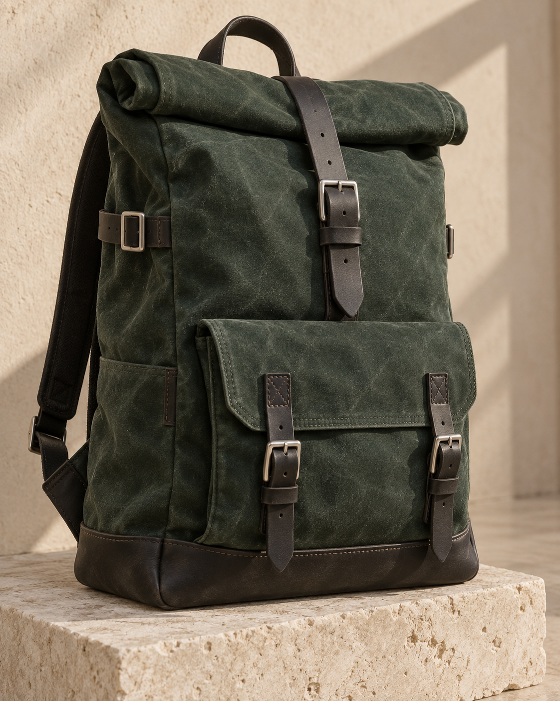

LESS TO CARRY. MORE TO KEEP.
Everything has
somewhere to go.
The set is deliberately small. Choose the colour that feels like yours, then add only what earns its place.
01 / THE SMALL THINGS
02 / THE DAILY COMPANION

A FEW GOOD THINGS, TOGETHER.
The bag for your notebook and the long way home. A place for the small things. Something for the journey.
Forest / ready to add
Original storefront concept with a working local bag. Installable Shopify section included. No checkout is connected here.
LESS TO CARRY. MORE TO KEEP.
The set is deliberately small. Choose the colour that feels like yours, then add only what earns its place.
BEHIND THE STOREFRONT
Switch the daypack colour. Add or remove accessories. Add several sets and inspect the grouped bag. Remove a set. Unavailable variants stay unavailable, and totals are derived from the selected line items.
A configurable Online Store 2.0 section, scoped styles, a cart adapter and installation notes. Choose actual products in the theme editor; variant IDs, prices and availability then come from Shopify.
The section uses Shopify’s locale-aware Ajax Cart API to add the selected variants in one request. A shared line-item property identifies the set. The submit state prevents duplicate clicks, while server errors stay visible.
This groups separate cart lines. It does not claim bundle inventory, enforce a discount, or replace a Shopify Bundles/Functions implementation. A failed or uncertain request is never retried automatically.
Read the implementation notes ↗FIELDWORK is an original portfolio concept. Product imagery and catalogue values were created for this build. The public storefront uses a local cart; the theme section requires installation and store-specific QA.
Read the three-page guide: Before you publish a Shopify theme ↓